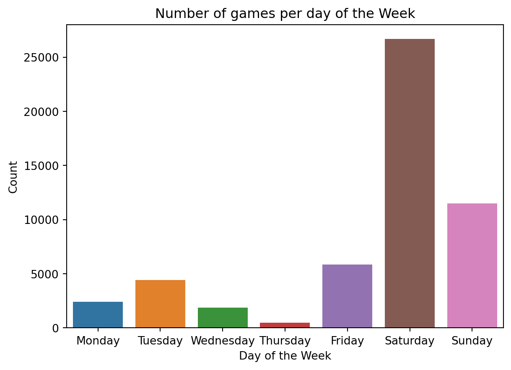
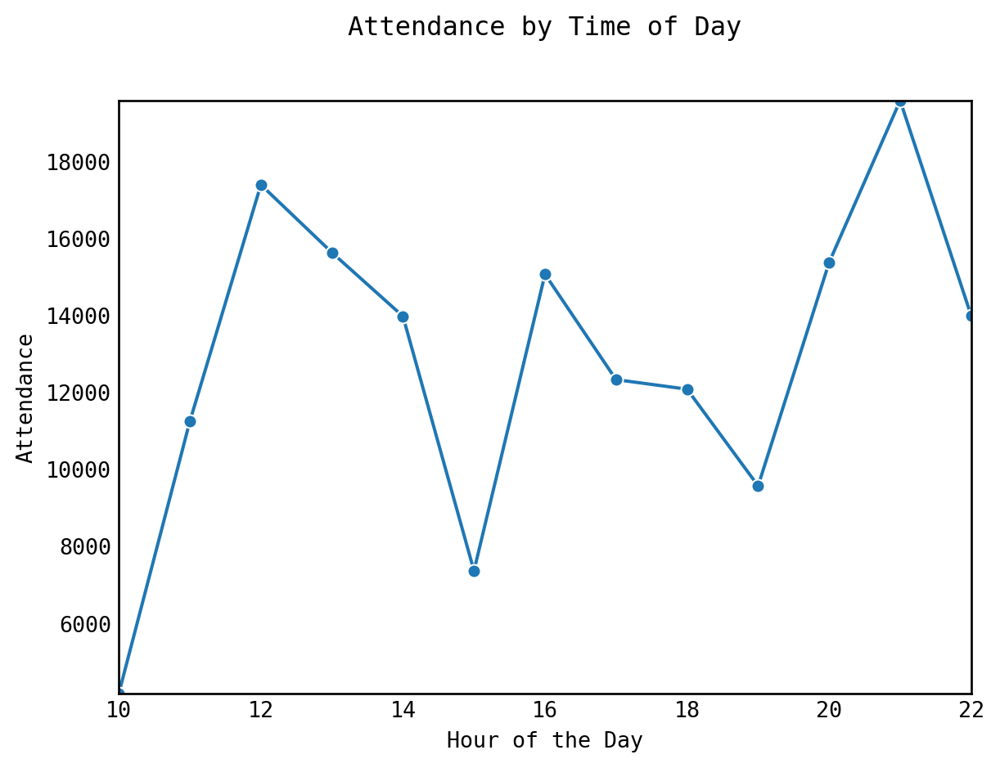

C:\Users\matth\AppData\Local\Temp\ipykernel_10928\26337685.py:6: FutureWarning:
Indexing with multiple keys (implicitly converted to a tuple of keys) will be deprecated, use a list instead.
C:\Users\matth\AppData\Local\Temp\ipykernel_10928\26337685.py:7: FutureWarning:
Indexing with multiple keys (implicitly converted to a tuple of keys) will be deprecated, use a list instead.
Day of the Week Standardized Median
sns.barplot(data=df_grouped_median, x ='day_of_week', y ='raw_attendance').set(title ='Median Attendance by Day of Week')plt.xticks(rotation=90)plt.xlabel('Day of the Week')plt.ylabel('Median Attendance')plt.show()
Day of the Week total Count
grouped_week_count = time_df.groupby('day_of_week').count().reset_index()grouped_week_count['day_of_week'] = pd.Categorical(grouped_week_count['day_of_week'], categories= day_categories)grouped_week_count.sort_values(by ='day_of_week', inplace =True)sns.barplot(data = grouped_week_count, x ='day_of_week', y ='date')plt.xlabel('Day of the Week')plt.ylabel('Count')plt.title('Number of games per day of the Week')plt.show()

Attendance Time of Day
df_grouped_mean_tod= time_df.groupby(time_df['date_time'].dt.hour).mean()df_grouped_median_tod= time_df.groupby(time_df['date_time'].dt.hour).median()sns.lineplot(data = df_grouped_median_tod, x ='date_time', y ='raw_attendance', markers =True, marker ="o" )plt.title('Attendance by Time of Day')plt.xlabel('Hour of the Day')plt.ylabel('Attendance')plt.show()

Number of Games Time of Day
df_grouped_count = time_df.groupby(time_df['date_time'].dt.hour).count()# print(df_grouped_count)df_grouped_count = df_grouped_count['raw_attendance'].reset_index()df_grouped_count['count'] = df_grouped_count['raw_attendance']df_grouped_count = df_grouped_count[['date_time', 'count']]# df_grouped_count= df_grouped_count.rename(columns = {'date':'count'})# print(df_grouped_count)df_count_atted = pd.merge(df_grouped_count, df_grouped_median_tod, on ='date_time')df_count_atted = df_count_atted.drop(columns= ['capacity_filled'])df_count_atted.rename( columns = {'raw_attendance': 'Attendance', 'count': "Number of Games"}, inplace=True)# print(df_count_atted)melted_count_attend = pd.melt(df_count_atted, value_vars=['Number of Games', 'Attendance'], id_vars='date_time')# print(melted_count_attend)sns.lineplot(data = melted_count_attend, x ='date_time', y ='value', hue ='variable')plt.title('Attendance and Game Count by Time of Day')plt.xlabel('Hour of the Day')plt.show()